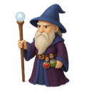
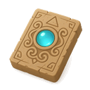

1
2
3

Constelações Mágicas!
Liga os pontos e descobre a imagem!
1/5

Fantástico!
Chegaste ao fim do caminho mágico!
És um excelente astrónomo das estrelas e desenhos!
És um excelente astrónomo das estrelas e desenhos!